왜 지금 AI 서비스이고, 왜 금방 안 될까요
강의는 숫자 하나로 시작해요. AI(Artificial Intelligence)를 깊게 쓰는 사람은 아직 아주 적으니, 그 소수가 나머지에게 AI를 서비스로 팔 수 있다는 거예요. 발표자 Albert Olgaard는 컴퓨터공학 학위 없이 AI 회사 두 곳을 만들어 합쳐서 100만 달러 넘는 매출을 냈고, 그게 가능했던 이유를 ChatGPT와 Claude에 돌려요.
아래 그림은 세계 인구 81억 명을 점 2,500개로 나타낸 거예요. 점 하나가 약 320만 명이에요. 빈 칸이 AI를 한 번도 써 보지 않은 84%(68억 명), 초록이 무료 챗봇만 쓰는 16%(13억 명)예요. 맨 아랫줄 오른쪽 끝의 노란 점 몇 개가 월 20달러를 내는 0.3%(2,500만 명), 빨간 점 하나가 가장 비싼 요금제를 쓰는 0.04%(360만 명)예요.
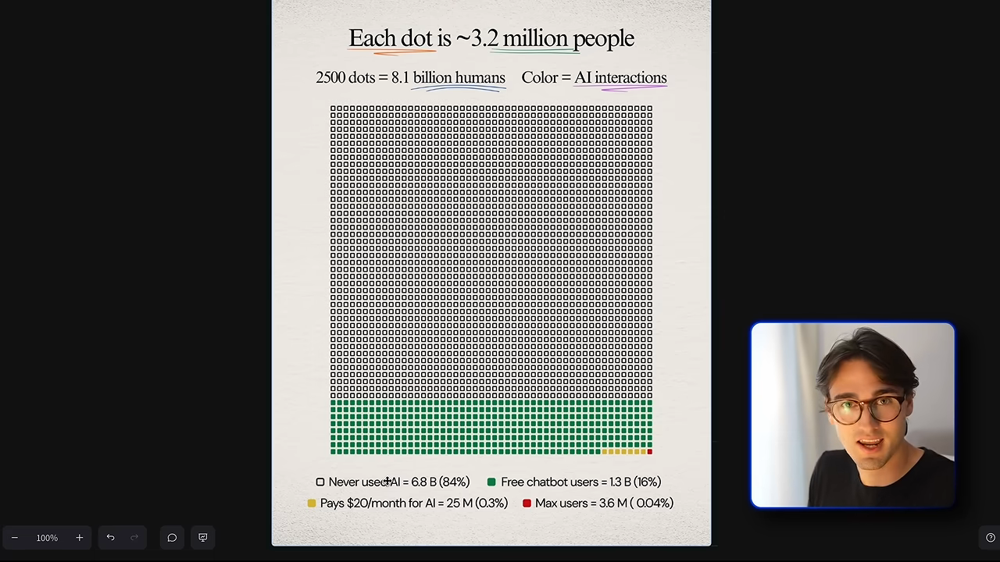
3년 전 발표자가 AI 서비스를 시작했을 때는 미국·캐나다·영국·호주만 시장이었대요. 지금은 유럽, 남미, 인도를 비롯한 아시아도 AI를 들여야 한다는 걸 알기 시작했다고 봐요. 이 이야기는 콜드 이메일 파트에서 "어느 나라에 보낼까"로 다시 나와요.
기대 곡선: 95%가 포기하는 구간
곧바로 기대를 꺾어요. 새 사업을 알게 되면 기대가 치솟다가, 첫 고객이 생각보다 멀고 실력을 꽤 쌓아야 한다는 걸 깨닫는 순간 크게 떨어져요. 화면의 흰 선이 그 모양이고, 바닥을 가리키는 화살표에 "95% Give up"이라고 적었어요. 오른쪽 초록 선은 버틴 5%예요. 첫 고객을 얻었다가 잃고, 다시 오르기를 반복하며 천천히 올라가요.
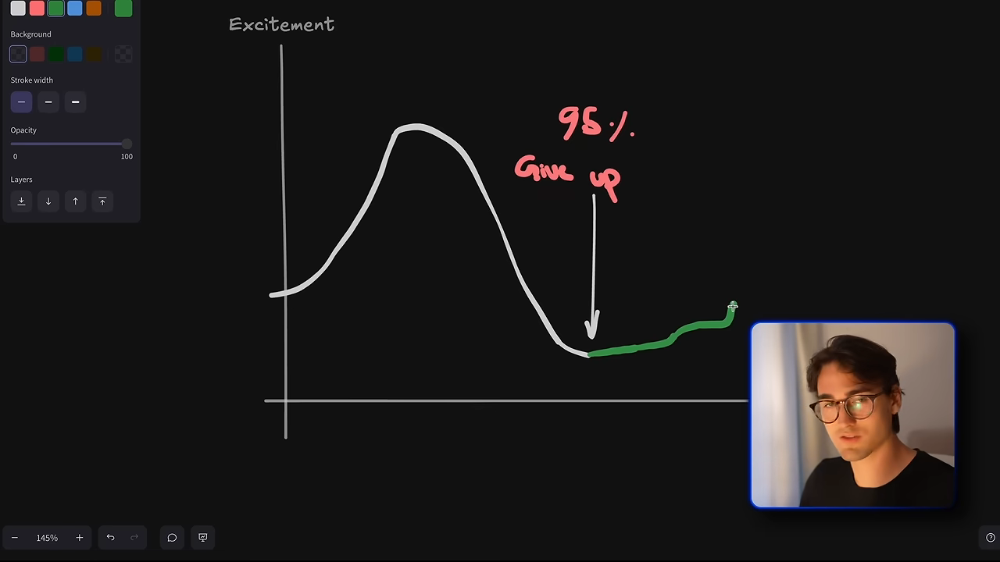
그래서 이 강의를 "빨리 부자 되기"로 보지 말라고 해요. 새 사업 모델을 기웃거리며 들뜸과 실망을 반복하는 게 최악이라는 거예요. 강의 순서도 여기서 밝혀요. 기술보다 고객 찾기를 먼저 다루고, 그다음 상담과 납품, 마지막에 가격과 로드맵을 다뤄요.
작업 환경: Claude Code, 스킬, GitHub
강의 전체가 Claude Code 하나로 돌아가요. 발표자는 이 사업에서 Claude Code가 일의 90~95%를 한다고 말해요. 그래서 첫 작업은 Claude Code가 살 집을 만드는 거예요. 순서는 VS(Visual Studio) Code 설치 → 작업 폴더 → Claude Code 설치와 로그인 → 스킬 설치 → GitHub 백업이에요.
- VS Code를 받아 설치하고, 회사 이름으로 폴더를 만들어 열어요 — 영상에서는 에이전시 이름인 Shiney로 만들었어요. 이 폴더가 앞으로 쓸 'AI 운영 체제'가 들어갈 곳이에요. VS Code 왼쪽에 빈 폴더가 열리고, 아래 터미널을 새로 열 수 있어요
- Claude Code 공식 문서의 설치 명령을 터미널에 붙여 넣어요 — 검색창에 'claude code install'을 치고 Quickstart 문서로 들어가요.
claude를 실행하고 구독 계정으로 로그인해요 — 테마를 고르고, 로그인 방식에서 구독 계정을 고른 뒤 브라우저에서 승인해요. 'Login successful'이 뜨고, 폴더를 신뢰하느냐는 확인 뒤에 Claude Code 화면이 열려요
발표자가 연 문서는 Claude Code Docs의 Quickstart 페이지예요. 왼쪽 메뉴에서 Getting started → Quickstart를 골랐고, 본문의 'Before you begin'에 필요한 것들이 적혀 있어요.
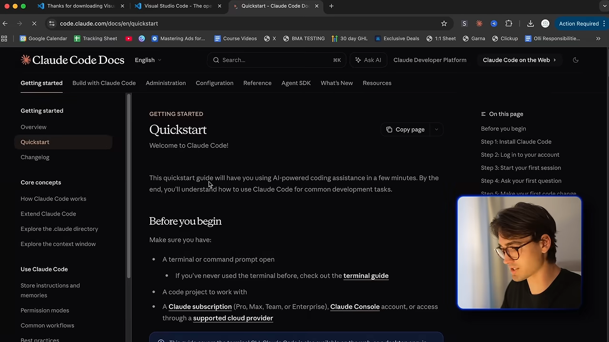
로그인할 때 쓸 요금제는 아래 화면에서 골라요. 왼쪽 Pro는 월 20달러, 오른쪽 Max는 월 100달러부터예요. 발표자는 사용량이 더 필요해서 Max를 쓰지만, 처음이라면 Pro로 시작하라고 권해요. Pro 설명 첫 줄에 'Claude Code directly in your codebase'가 들어 있어요.
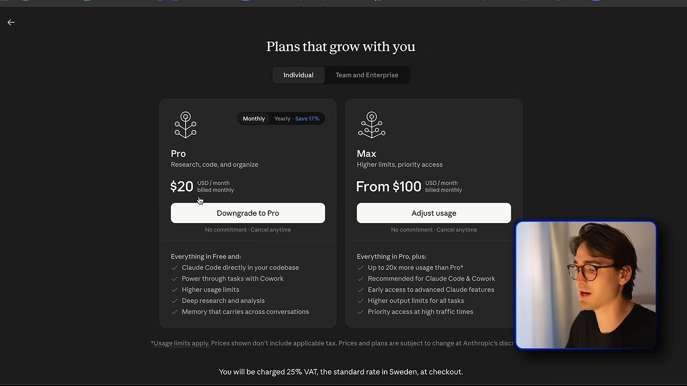
스킬: Claude에게 주는 작업 지침서
다음은 스킬이에요. 발표자는 스킬을 "Claude Code에 건네는 휴대용 기술"이라고 설명해요. 실체는 어떤 일을 어떻게 하라는 지침 문서예요. 좋은 지침이 있으면 Claude Code가 지금보다 더 잘하게 돼요. 발표자가 공유한 스킬 묶음을 내려받아 압축을 푼 뒤, Claude에게 아래처럼 시켜요.
화면의 프롬프트는 세 문장이에요. 내려받기 폴더의 'Claude Skills 2' 안에 스킬이 있다, 이걸 지금 프로젝트 폴더에 설치해 달라, 그리고 먼저 설치 방법 문서를 찾아보라예요.
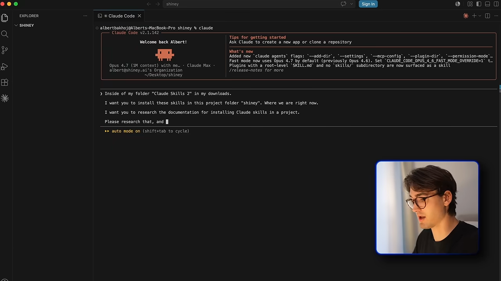
43초 만에 프로젝트 안에 .claude/skills 폴더가 생겼어요. 발표자는 세션을 재시작해야 스킬이 켜진다고 말하고 Claude Code를 껐다 켜요. 그다음 /를 치면 목록에 새 스킬들이 보여요. 맨 위 /frontend-design은 "디자인 품질이 높은 프런트엔드 화면을 만든다"는 설명이 붙어 있고, 아래로 composio, customer-support, researcher, security 같은 이름이 이어져요.
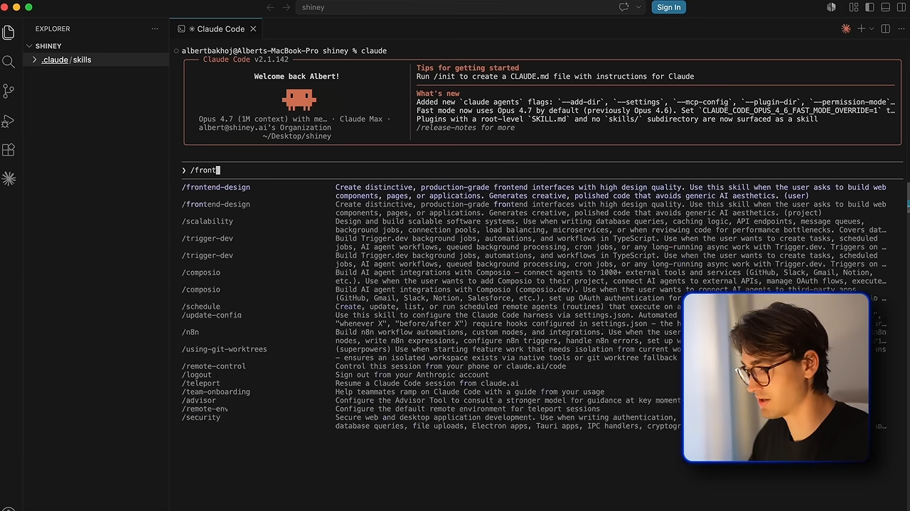
GitHub에 작업 공간 백업하기
몇 주 쌓은 작업 공간과 스킬을 잃으면 안 되니 클라우드에도 복사본을 둬요. GitHub에서 새 저장소를 만들 때 이름은 shiney_workspace, 공개 범위는 Private으로 골라요. 아래 화면의 Choose visibility 드롭다운에서 Private을 누르는 장면이에요. 작업 공간은 가치 있는 자산이라 남이 보면 안 된다는 이유예요.
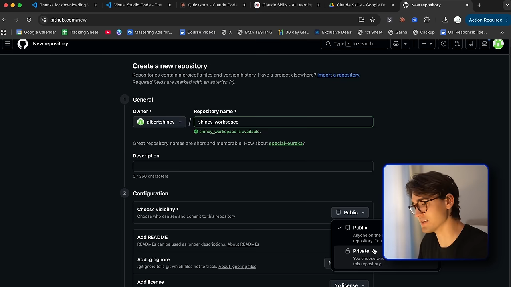
한 번 막혔어요. Claude가 자동 모드로 돌던 중이라 분류기가 푸시를 막았어요. 발표자는 기본 모드로 바꾸고 다시 시켜서, 푸시 명령을 직접 승인했어요. 52개 파일이 올라갔어요.
비싸게 팔기 전에 실력부터
기술을 배우기 전에 발표자가 먼저 꺼내는 건 "어떻게 팔까"예요. 다른 강의들은 기술만 보여 주지만, 대부분이 막히는 곳은 판매라는 거예요. 그 출발점으로 이 말을 해요.
You have to get good before you can get rich.
부자가 되기 전에 먼저 잘해져야 해요.
— 영상 19:30
화이트보드를 보면 이유가 보여요. 가운데 "$10K Website"(1만 달러짜리 웹사이트)에서 화살표가 두 갈래로 나가요. 위쪽은 "No trust", 신뢰가 없다는 거예요. 신뢰는 그 오른쪽의 testimonials(고객 후기)와 Experience(경험)에서 생겨요. 아래쪽은 "Skills", 기술이 부족하다는 거예요. 그래서 $10K에 빨간 줄을 긋고 위에 "free"라고 적어요.
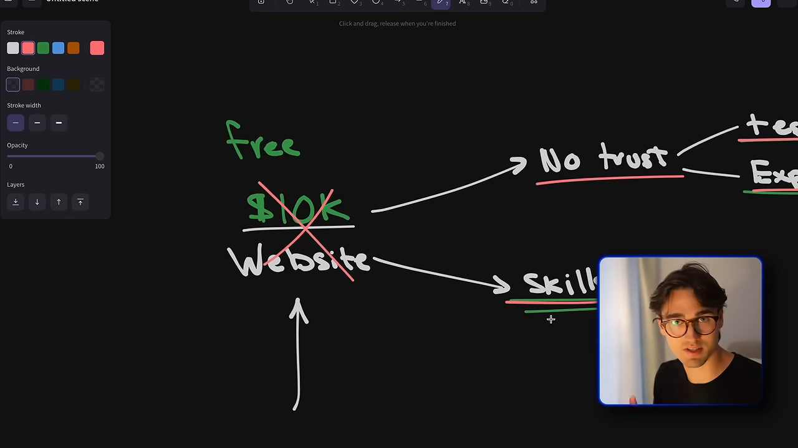
고객이 돈을 내는 건 내가 기술을 쌓으려고 들인 시간과 노력 때문이라고 해요. 쉬운 일이라면 아무도 돈을 내지 않겠죠. 발표자 자신도 첫 유료 고객까지 4개월이 걸렸고, 그 고객이 낸 돈은 400달러였어요. 그전에는 무료로 일하며 신뢰와 후기를 모았대요.
팔 수 있는 것: 세 단계
처음 무엇을 만들어 팔지는 세 단계로 나눠요. 1단계 웹사이트, 2단계 자동화와 에이전트, 3단계 전체 AI 시스템이에요. 화이트보드에 세 줄로 적은 그대로예요.
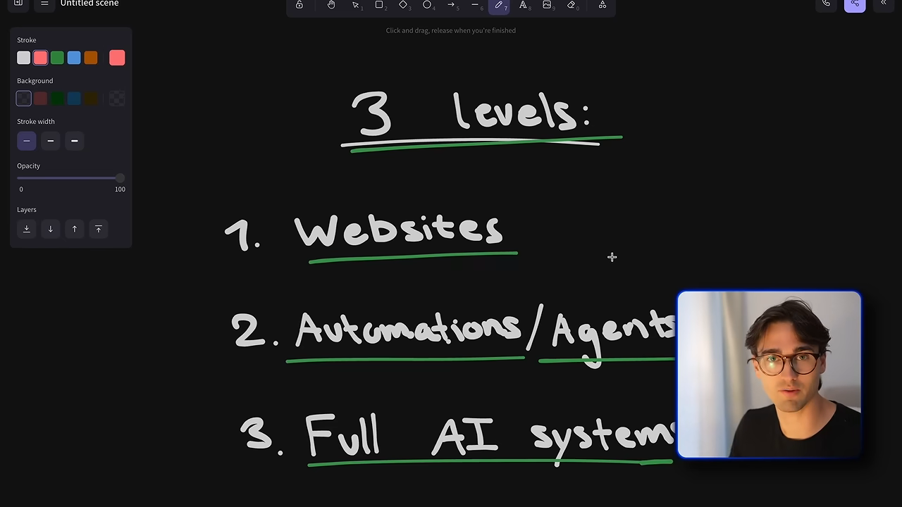
웹사이트부터인 이유를 Claude에게 직접 물어보며 보여 줘요. "웹사이트 없는 소기업이 얼마나 되나"라고 묻자 Claude가 웹을 찾아 여러 조사를 모아요. 화면 가운데의 굵은 줄이 결론이에요. 2026년 기준 대략 27~30%라는 거예요. 이어 미국 소기업 약 3,600만 곳 중 1,000만 곳 정도라는 답이 나와요.
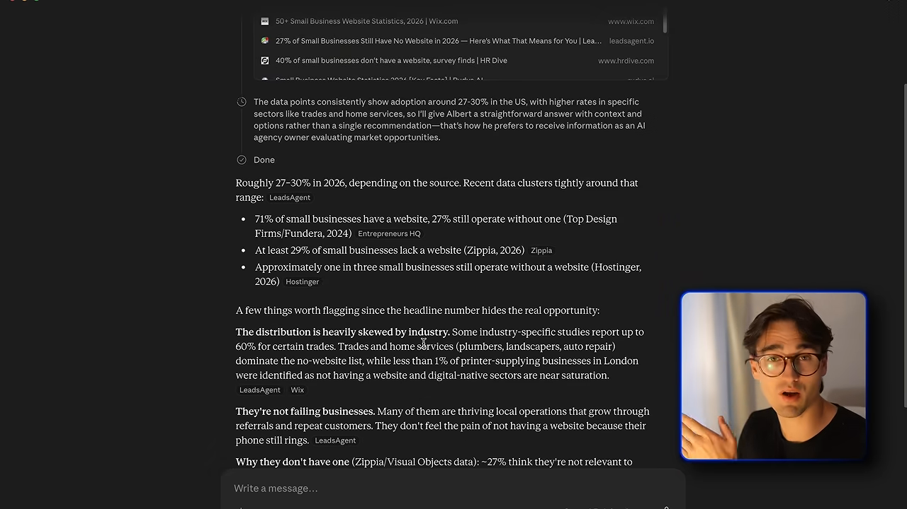
세 단계가 강의 뒤쪽에서 실제로 어떻게 만들어지는지 한 장에 모으면 이래요. 단계마다 앞 단계의 도구를 이어 써요. 2단계에서 만든 자동화가 그대로 3단계 대시보드의 메뉴 하나가 돼요.
Upwork로 첫 고객 잡기
첫 고객은 언제나 가장 어려워요. 발표자는 큰 돌을 처음 굴릴 때처럼 힘이 많이 들지만, 한 번 구르기 시작하면 가속이 붙는다고 비유해요. 첫 몇 고객을 얻을 곳으로 고른 게 Upwork예요. 회사가 "이런 일을 해 줄 사람"을 올리고 프리랜서가 지원하는 플랫폼이라, 내 서비스가 딱 필요한 리드를 바로 찾을 수 있다는 게 장점이에요.
프로필: 최대한 채우고, 잘하는 사람을 따라 해요
가입하고 나면 프로필을 채워요. 발표자가 짚은 항목은 이래요.
- LinkedIn 프로필을 PDF(Portable Document Format)로 저장해 올리면 경력이 자동으로 들어가요.
- 분야는 IT(Information Technology) & Networking 아래 데이터베이스 관리, CRM(Customer Relationship Management) 소프트웨어를 골랐어요. 자동화 에이전시에 가장 가깝대요.
- 기술에는 쓰는 도구(GoHighLevel, n8n, Make, Zapier, Claude)와 TypeScript·Python 같은 언어를 넣어요.
- 언어는 아는 만큼 모두, 근무 성향 퀴즈와 포트폴리오, 자격증, 경력도 채워요.
- 위치는 사람들이 아는 도시로 바꿔요. 작은 동네 이름보다 Copenhagen이 신뢰를 준대요.
Upwork 프로필은 공개돼 있어서 잘나가는 사람 것을 그대로 볼 수 있어요. 아래는 발표자가 예로 든 Vepa D.예요. 이름 아래 Istanbul, Turkey라는 큰 도시, 98% Job Success와 Top Rated Plus 배지, 아래쪽에 총수입 $1M+, 105건, 1,962시간이 보여요. 상담 예약 버튼과 많은 후기, 포트폴리오도 갖췄어요.
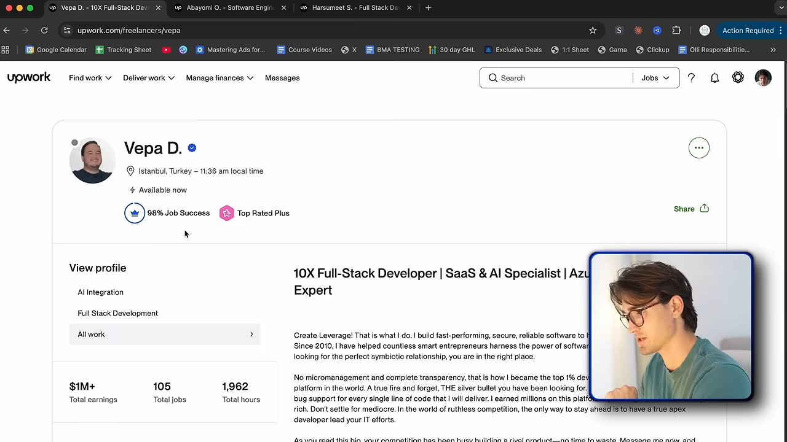
발표자는 이런 상위 프로필을 여러 개 모아 Upwork 프로필 개선 스킬을 만들었어요. /upwork를 부르고 내 프로필 페이지 전체를 붙여 넣으면 Claude가 제목과 소개를 진단하고 고쳐 써 줘요. 시급은 처음엔 15달러 정도로 낮게 잡아요. 돈보다 첫 일감과 작업 성공률이 먼저이기 때문이에요. 숫자는 16.73달러처럼 정밀하게 적어요. 정밀한 숫자에는 이유가 있어 보여서 믿음이 간다는 거예요.
그다음 유료 플랜으로 올려요. 무료 Basic은 커넥츠를 한 달 10개 주고, Plus는 100개를 줘요. 영상 당시 첫 달 50% 할인이 있었어요. Plus에서는 신분 인증(35커넥츠)과 '지금 가능' 배지(주당 14커넥츠)를 켤 수 있어요. 아래가 그 결과예요. 이름 옆 파란 인증 표시, 위치 Copenhagen, Denmark, 그 아래 'Available now', 오른쪽 제목 'AI Automation Engineer | AI Agent Systems in GHL, n8n & Make'와 $16.73/hr예요.
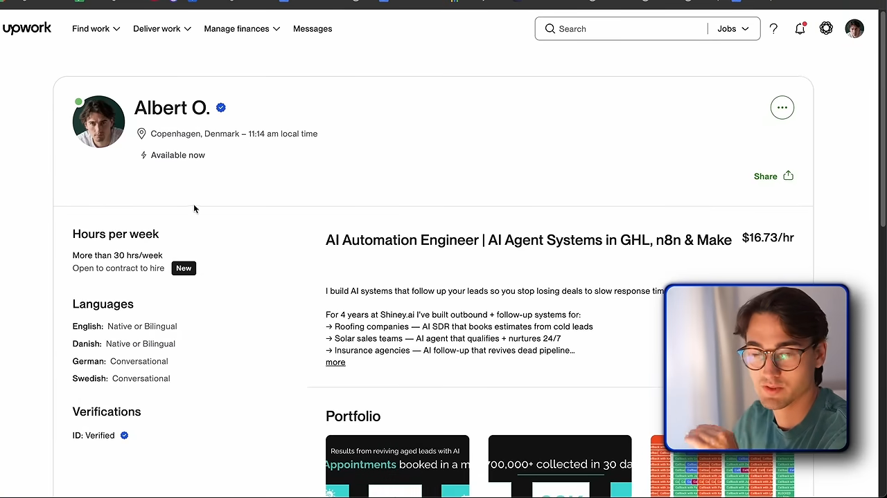
어떤 공고에 지원할까요
지원할 때마다 커넥츠를 쓰니 아무 공고에나 넣으면 안 돼요. 제안서가 50개 넘게 몰린 공고는 피하고 20~50개가 적당하다고 해요. 무엇보다 빨리 지원하는 게임이에요. 아래 목록에서 위쪽 공고는 'Proposals: 50+'라 거르고, 가운데 'AI Automation Specialist Needed (GHL + Claude AI + AI Agents)'는 3시간 전에 올라왔고 제안서가 5~10개라 좋은 후보로 골랐어요.
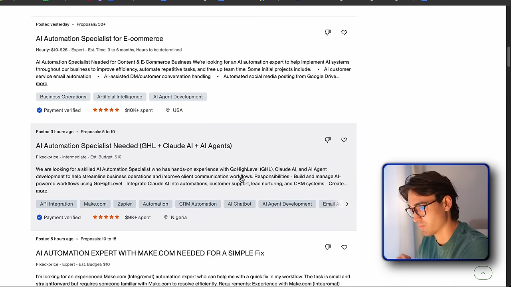
재밌는 건 이 공고를 버렸다는 거예요. 발표자의 제안서 스킬에 공고를 붙이자 Claude가 경고를 달았어요. 고정가 10달러, 의뢰인의 평균 시급 7달러, 열린 공고 67개라서 사람만 구해 두려는 공고 같다는 거예요. 대신 지금까지 5만 달러를 쓴 의뢰인의 'HighLevel AI Automation Fulfillment Partner' 장기 공고에 지원했어요.
제안서: AI 초안을 내 말로 고치고, Loom을 붙여요
제안서 스킬은 먼저 나에 대해 물어요. HighLevel 음성 에이전트를 만들어 봤는지, 실제로 쓰는지, 가격은 어떻게 할지, 내 강점이 뭔지예요. 답하면 초안을 써 주지만 그대로 붙이지 않아요. 아래 화면처럼 첫 줄에 'THIS IS NOT WRITTEN BY AI'를 넣고, "나도 AI 자동화 에이전시를 운영해 봐서 이 모델을 안다"는 식으로 내 말투로 고쳐요. 그 아래 'How I'd start'에 세 단계 시작 계획을 적었어요.
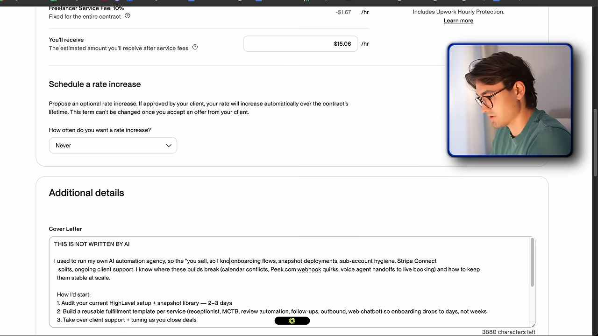
여기에 1분짜리 Loom 영상을 붙여요. 얼굴을 크게 보이게 해서 실제 사람이라는 걸 알리고, 화면으로 할 수 있는 걸 보여 줘요. 발표자는 Make에서 GoHighLevel 'Add an Account' 모듈을 열어, 하위 계정을 자동으로 만드는 API가 있다는 걸 설명했어요. 아래 화면 가운데 큰 GoHighLevel 아이콘 아래 'Add an Account'가 그 모듈이에요.
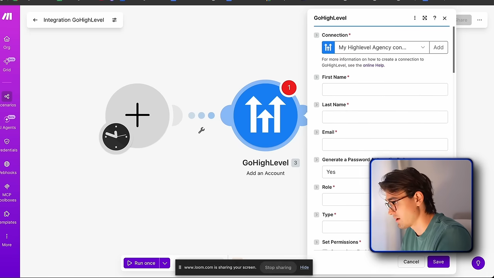
보낸 공고에는 이미 제안서 19개가 있었지만 모두 시급 25달러 근처라 해볼 만하다고 봐요. 커넥츠는 계속 사야 하지만, 이만큼 뜨거운 리드를 Facebook 광고로 얻으려면 리드 하나에 100~200달러가 든다고 비교해요. 제안서 하나에 적어도 10~15분을 쓰라고 해요.
의뢰인 쪽에서 본 경쟁
"이미 20명이 지원했는데 내가 될까?"에 대한 답으로, 발표자가 영상 편집자를 구하며 받은 제안서 목록을 보여 줘요. 왼쪽 이름 아래 국가가 대부분 Pakistan이고, 오른쪽 Details 칸의 소개 글은 'Top-Rated Plus video editor with over 6 years...'처럼 비슷한 틀로 시작해요.
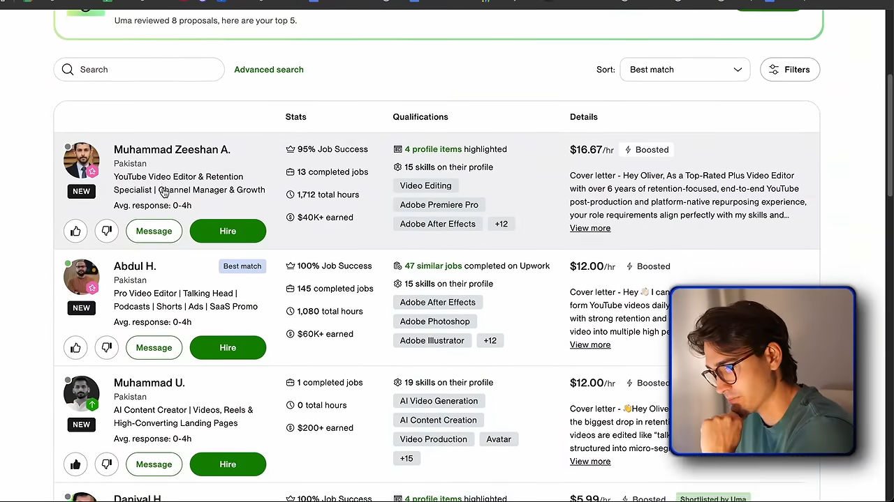
발표자는 여기서 서구권 출신이 유리하다고 말하지만, 인도 같은 나라 출신이어도 할 수 있고 경쟁이 더 셀 뿐이라고 덧붙여요. 그리고 Upwork 프로필을 키우는 데는 몇 달, 길게는 몇 년이 걸린다고 다시 기대치를 맞춰요. 일을 하며 실력이 늘고, 고객이 다른 고객을 소개하면서 눈덩이처럼 커진다는 게 Upwork를 첫 무대로 고른 이유예요.
콜드 이메일 캠페인을 Claude로
Upwork가 주력이라면 콜드 이메일은 더 많은 사람에게 싸게 닿는 보조 엔진이에요. 자격을 갖춘 잠재 고객에게 메일을 많이 보내고, 관심 있는 사람만 답하게 하는 방식이에요. 발표자는 이 과정 대부분을 Claude에게 맡겨요.
어느 나라에 보낼까요
세계 지도에서 초록 빗금은 미국·캐나다·영국·호주예요. 챗봇과 음성 에이전트에 이미 익숙한 시장이에요. 파란 빗금은 유럽, 남미, 남아프리카, 아시아 여러 나라예요. 발표자는 파란 쪽에서 이 방법이 특히 잘 통하고, 초록 쪽은 답장률이 낮다고 해요.
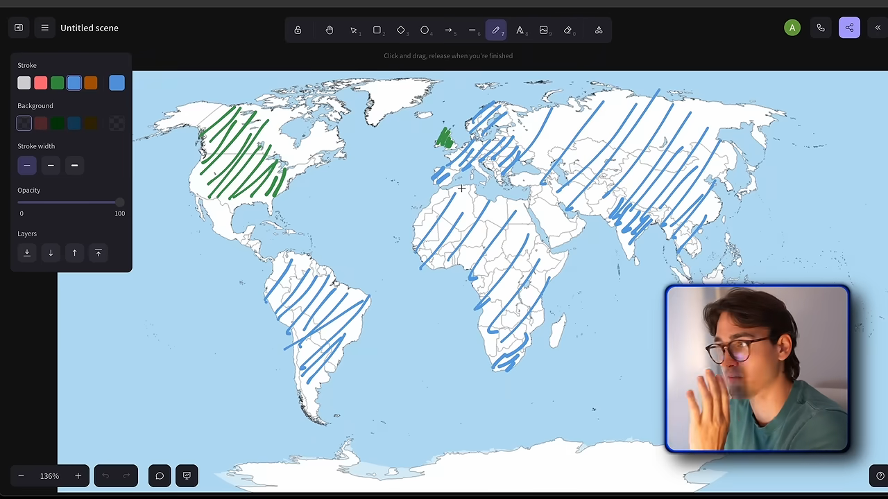
초보자는 그래도 미국·영국·호주를 노리는 경우가 많대요. 발표자는 반대로 권해요. 스웨덴어나 그리스어, 포르투갈어처럼 세계가 다 쓰지 않는 언어를 하면 경쟁자가 훨씬 적다는 거예요. 단, 그 나라에서 콜드 이메일 발송이 합법인지 먼저 확인하라고 해요.
Instantly를 MCP로 Claude에 붙여요
발송 도구는 Instantly예요. 이메일 계정을 쉽게 얻고 대량으로 보낼 수 있고, Claude가 일을 맡을 수 있는 MCP를 제공하기 때문이에요. 연결은 Claude 데스크톱 앱에서 하는 게 가장 쉽대요. 설정 → 커넥터 → 커스텀 커넥터 추가에서, Instantly 설정의 API 키를 넣은 MCP 주소를 붙여 넣어요. 데스크톱 앱에서 추가한 커넥터는 Claude Code에서도 보여요. 아래는 Claude Code에서 /mcp를 친 화면이에요. 'claude.ai Instantly MCP Server'가 connected 상태이고, 아래 Tools에 38 tools가 적혀 있어요.
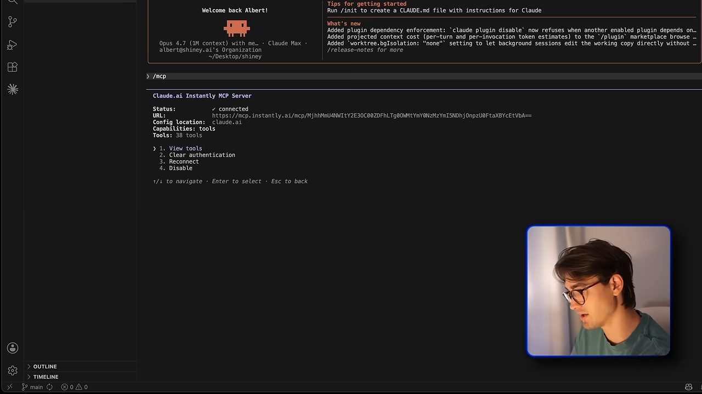
보낼 계정도 필요해요. 내 도메인을 직접 웜업하려면 30일쯤 걸리니, 처음엔 Instantly가 미리 웜업해 둔 계정을 사요. 계정 이름은 Arthur, Charlotte처럼 내 이름이 아니에요. 도메인을 살 때 '포워딩 도메인'을 내 웹사이트로 꼭 지정해요. 누가 그 도메인에 들어오면 내 사이트로 가게 하는 거예요. 계정 하나는 하루 20통까지 보내니, 다섯 개면 하루 100통이에요.
목표로 삼을 숫자
발표자의 실제 치과 대상 캠페인이에요. Progress 60%, Sent 962, Replied 49 | 5.1%, Opportunities 6이 보여요. 보낸 수에는 첫 메일과 후속 메일이 모두 들어가요. 답장 중 상당수는 "빼 달라"는 거절이고, 정말 관심을 보인 사람이 6명이에요.
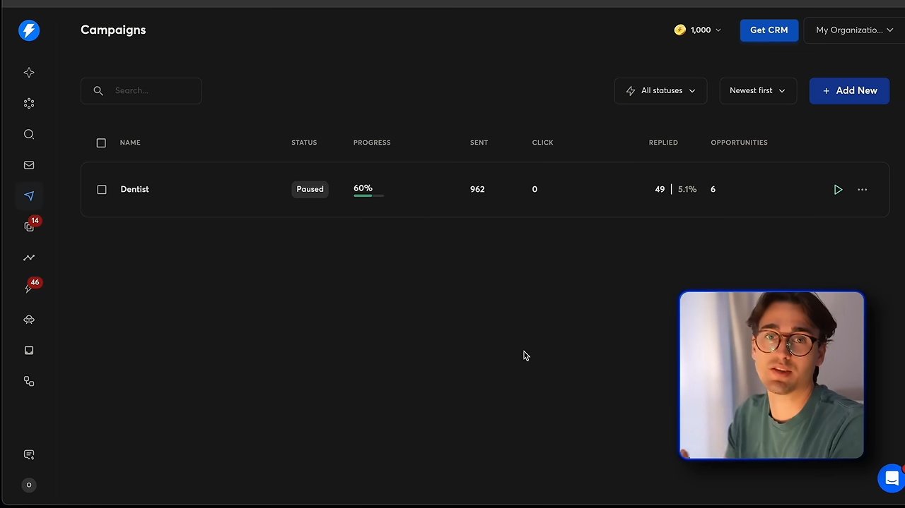
캠페인 글은 스킬이 써요
발표자의 캠페인 스킬은 잘된 캠페인들을 바탕으로 만들었대요. /instantly-campaign을 부르고 "스웨덴 지붕 업체 대상 캠페인을 만들고 싶다"고만 적어요. 그러면 Claude가 차례로 물어요. 무엇을 파는지, 상대의 가장 큰 고통이 뭔지, 메일이 공짜로 줄 자료가 뭔지예요. 아래 화면이 세 번째 질문이에요. 그 답이 제목줄이 된다고 적혀 있고, 선택지로 손실 매출 계산기 같은 스웨덴어 항목이 나와요.
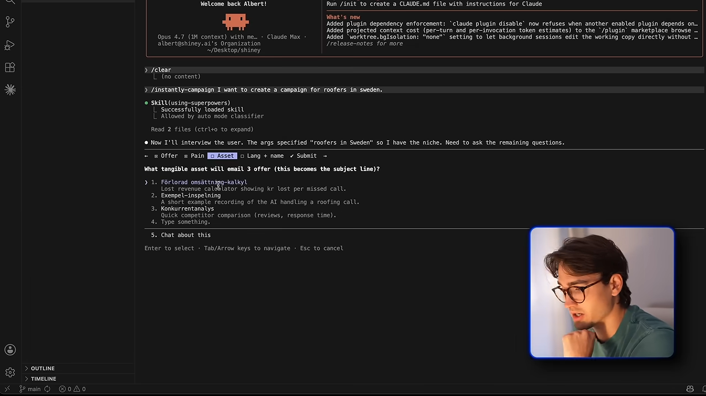
초안은 "전화하려다가 먼저 메일을 드려요"로 시작해, 웹사이트가 구글 상위에 안 떠서 일감을 놓치고 있다고 짚는 내용이었어요. 승인하자 Claude가 MCP로 Instantly에 캠페인을 직접 만들었어요. 처음엔 시퀀스가 비어 보였는데 강력 새로고침을 하니 다 들어와 있었어요.
리드 모으기와 검증
리드 준비는 네 단계를 거쳐요.
flowchart LR A["Apollo에서 조건 검색"] --> B["대행 서비스로 추출 (CSV)"] B --> C["MillionVerifier로 검증"] C --> D["'좋음'만 Instantly에 업로드"] D --> E["업무 시간에 발송 · Unibox에서 답장 확인"]
Apollo에서는 지역(Sweden), 업종 키워드(construction, real estate), 직함(Owner, Founder, CEO(Chief Executive Officer)), 이메일 상태 Verified를 걸어요. 가장 중요한 필터는 회사 규모래요. 아래 화면 왼쪽의 '# Employees' 목록에서 1~10, 11~20, 21~50명만 골라요. 처음부터 대기업을 잡기는 어렵기 때문이에요.
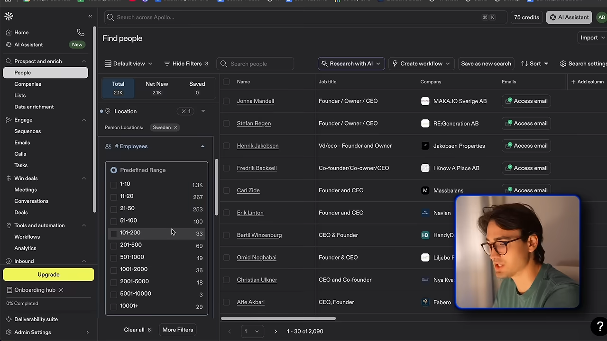
받은 목록은 바로 쓰지 않고 MillionVerifier에 올려요. 없는 주소로 보내면 반송이 쌓이고, 메일 서비스가 스팸으로 보고 도메인을 블랙리스트에 올려요. 그러면 도메인을 새로 사야 해요. 아래 결과에서 Good 64%(625개), Risky 17%, Bad 18%가 나왔어요.
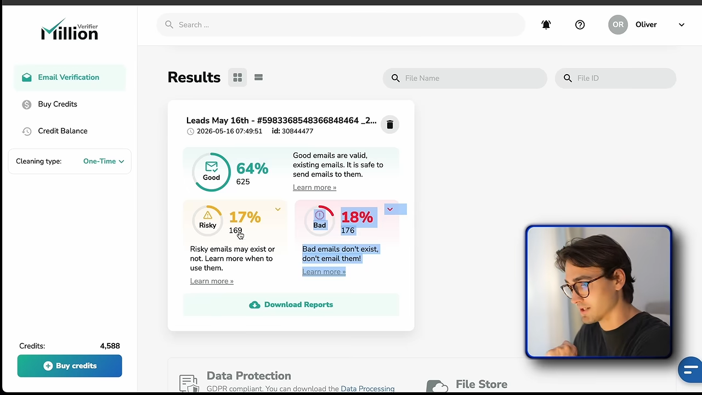
Instantly에서는 CSV(Comma-Separated Values)를 올리며 이름, 직함, 회사, 웹사이트 같은 칸을 맞추고, 방금 검증했으니 Instantly 자체 검증은 꺼요. 발송 시간은 기본값인 오전 7시~오후 4시, 주말 제외를 권해요. 정리하면 매일 Upwork에 지원하는 걸 주력으로 하고, 콜드 이메일은 뒤에서 돌려 하루 몇 건의 미팅을 얻는 구조예요.
상담 통화에서 계약까지
관심 있다는 답장이 오면 통화로 넘어가요. 발표자는 초보가 통화 전, 통화 중, 통화 후 세 곳에서 실수한다고 보고 규칙을 하나씩 세워요. 전체를 먼저 표로 보면 이래요.
| 언제 | 할 일 | 이유 |
|---|---|---|
| 통화 전 | 가격을 먼저 말하지 않기 | 가치를 모르면 가격으로만 판단해요 |
| 통화 전 | 확인 메시지와 리마인더 보내기 | 잊고 안 나타나는 사람이 많아요 |
| 통화 전 | 통화를 건너뛰지 않기 | 바로 살 준비가 된 사람은 드물어요 |
| 통화 중 | 의사처럼 묻기, 내가 20% 상대가 80% | 상대가 문제를 스스로 말하면 더 설득돼요 |
| 통화 중 | 그 자리에서 다음 통화 잡기 | 달력에 없으면 연락이 끊겨요 |
| 통화 중 | 결제 정보를 받아 두기 | 약속을 행동으로 묶어 둬요 |
| 통화 후 | 일 잘하기, 격주 통화, 업셀, 소개 요청 | 이탈을 줄이고 LTV(Lifetime Value)를 키워요 |
통화 전: 가격은 감추고, 리마인더는 여러 번
가격을 먼저 들은 고객은 "지금 2천 달러를 낼까?"만 생각하고 답을 끊어요. 통화에서 1만 달러어치 가치를 보여 준 뒤에 2천 달러를 말하면 쉬운 결정이 돼요. 그다음 규칙이 리마인더예요. 아래 화이트보드는 언제 보낼지를 적은 거예요. 일정이 잡히면 즉시, 이후 3일마다, 하루 전, 한 시간 전, 5분 전이에요.
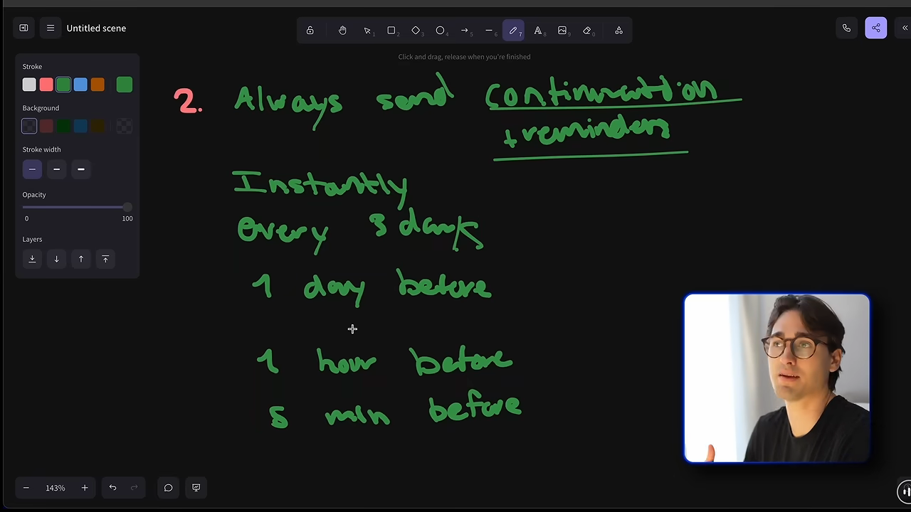
리마인더에는 미리 해 둔 작업을 넣어요. "회사에 맞춘 데모를 준비해 뒀어요"라고 하면 안 나타나기 미안해져요. 사람들이 통화에 안 오는 건 그 시간이 아깝다고 느끼기 때문이니, 무엇을 보여 줄지 구체적으로 알리라고 해요.
통화 중: 의사처럼 질문하기
의사는 들어오자마자 약을 주지 않고 어디가 아픈지, 얼마나 됐는지부터 물어요. 판매도 같다는 거예요. "경쟁사는 구글 리뷰가 150개인데 이쪽은 5개고 하나는 별 하나예요. 손님은 누구를 고를까요?"라고 물으면 상대가 "경쟁사겠죠"라고 스스로 문제를 말해요. 리뷰가 이미 500개라 문제가 없는 곳에 억지로 파는 건 비윤리적이라고도 선을 그어요.
통화 순서는 아래 화이트보드의 다섯 줄이에요. 1 질문으로 고통 짚기, 2 고통을 해결책과 잇기, 3 해결책을 보여 준 뒤 가격, 4 반론에 답해 걱정 지우기, 5 계약이에요. 왼쪽 큰 체크 표시는 이게 옳은 구조라는 뜻이에요.
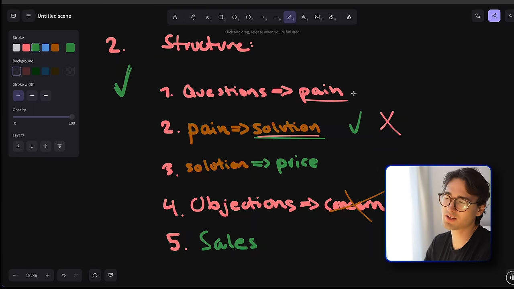
틀린 구조도 같이 그려요. 제품 기능을 슬라이드로 늘어놓은 뒤 "사실래요?"라고 묻는 방식이에요. 고통을 짚지 않았으니 상대는 2천 달러라는 가격에 "아니요"라고 답해요.
합의가 되면 그 자리에서 다음 통화를 잡고, 결제 정보를 받아요. 방법은 Stripe의 1달러 연간 결제 링크예요. 결제 링크에서 'Checking Card' 상품을 연 1달러 반복 결제로 만들어 두면, 상대가 카드를 등록하고 나중에 실제 금액을 내 쪽에서 청구할 수 있어요. 1달러는 환불해 준다고 말해요.
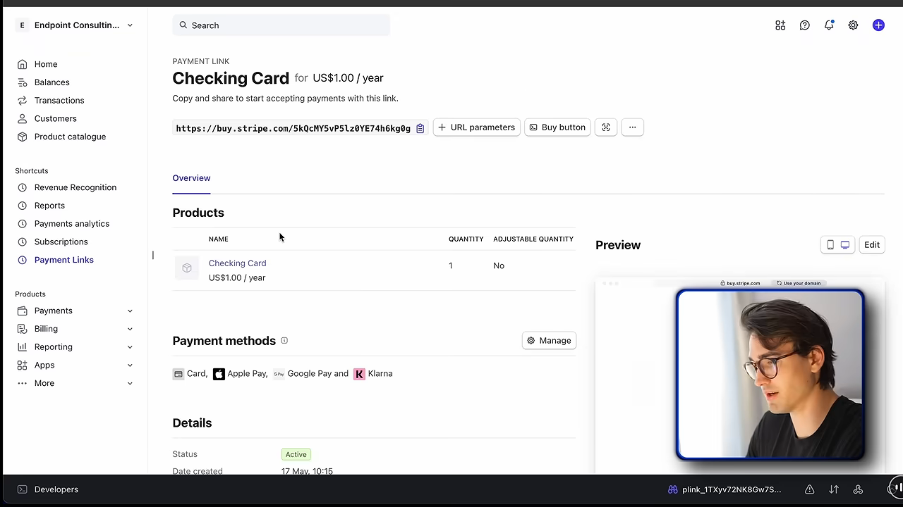
계약이 안 될 때: 개념 증명 제안
가격까지 갔는데 계속 거절당하면 쓰는 보너스 카드예요. 발표자는 이걸로 수만 달러를 벌었대요. 화이트보드의 세 줄이 구조예요. 1 선금(예: 1천 달러)으로 약속을 받고, 2 웹사이트를 끝까지 다 만들어 보여 주고, 3 마음에 안 들면 전액 환불해요. 발표자는 실제로 환불해 준 적이 한 번도 없다고 적어 뒀어요.
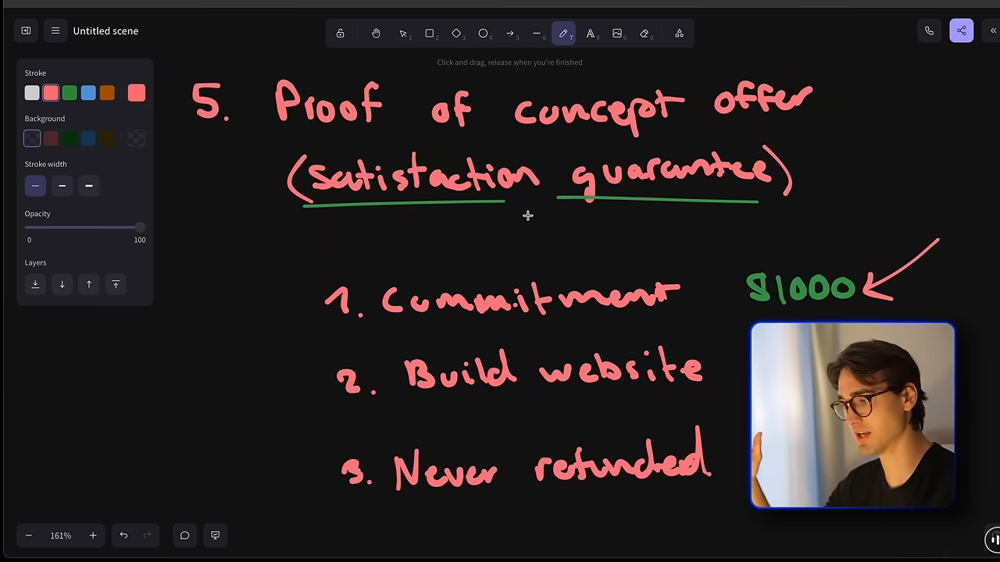
통화 후: 관계를 이어 가기
아래 화이트보드는 통화 뒤 네 가지예요. 1 일을 정말 잘하기, 2 격주로 통화하기, 3 업셀해서 LTV 올리기, 4 소개 받기예요. 1과 2를 잇는 화살표처럼 모두 연결돼 있어요. 일을 잘하고 시간을 써야 업셀과 소개도 나와요.
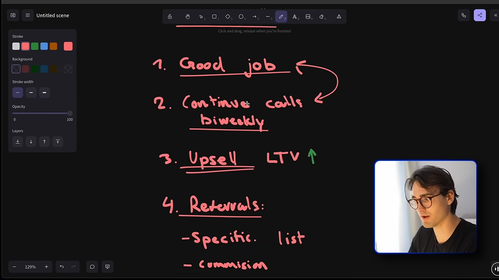
격주 통화를 하면 이탈률이 5% 안팎으로 떨어진다고 해요. 많은 에이전시는 20~30%인데, 30%면 고객이 평균 석 달만 머문다는 뜻이에요. 업셀은 새 고객을 찾는 비용 없이 매출을 늘리는 가장 좋은 방법이에요. 웹사이트를 만들어 준 고객에게 전화 받는 AI나 구글 광고를 권하는 식이에요. 소개는 "아는 분 있어요?"가 아니라 "주변에 배관공, 전기공, 조경 업체 하는 분 있어요?"처럼 물어요. 머리가 처음부터 떠올리기보다 목록에서 고르기가 쉽기 때문이에요. 소개한 사람에게는 그 고객 매출의 20%를 줘도 된대요.
통화 녹취를 Claude에게 바로 넘기기
통화가 끝나면 보통은 내가 들은 내용을 Claude에게 다시 설명해요. 그러다 빠뜨리는 게 생겨요. 발표자는 회의 녹음 도구 Fathom을 Claude 데스크톱 앱의 커넥터로 붙여요. 그러면 Claude Code에서 회의 목록, 요약, 녹취를 직접 가져올 수 있어요. 아래는 "3월 6일 통화를 Fathom MCP로 요약해 줘"라고 하자 목적과 핵심 내용이 정리돼 나온 화면이에요.
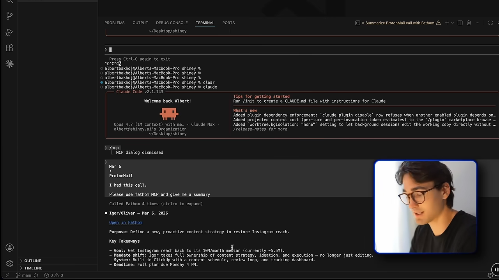
1·2단계: 웹사이트와 자동화 만들기
이제 납품이에요. 이 사업의 본질은 고객이 직접 배우느니 돈을 내고 맡기려는 기술을 갖추는 거라고 다시 말해요. 웹사이트는 AI로 쉽게 만들 수 있게 된 지금도 '비싸 보이는' 가치가 남아 있어서 첫 상품으로 좋대요.
1단계: 웹사이트
발표자가 보여 준 완성 예시는 덴마크 배관 업체 사이트예요. 스크롤하면 위에 붙는 내비게이션 바, 눈에 띄는 견적 요청 버튼, 바로 걸 수 있는 전화번호가 있어요. 아래 화면의 'Få et tilbud'(견적 받기) 버튼과 전화번호 버튼이 그거예요.
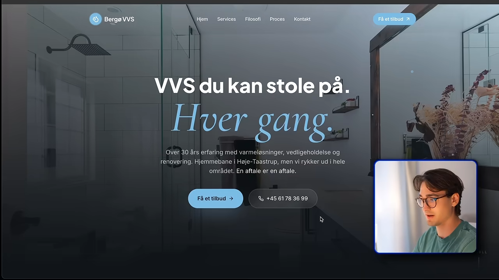
이런 사이트를 얼마에 파는지 Claude에게 물어요. 템플릿을 쓰는 1인 프리랜서는 1천~3천 달러, 작은 부티크는 3천~1만 달러, 제대로 된 소규모 에이전시는 1만~3만 달러, 중견은 3만~8만 달러, 수상급 스튜디오는 8만~25만 달러 이상이라는 답이 나와요.
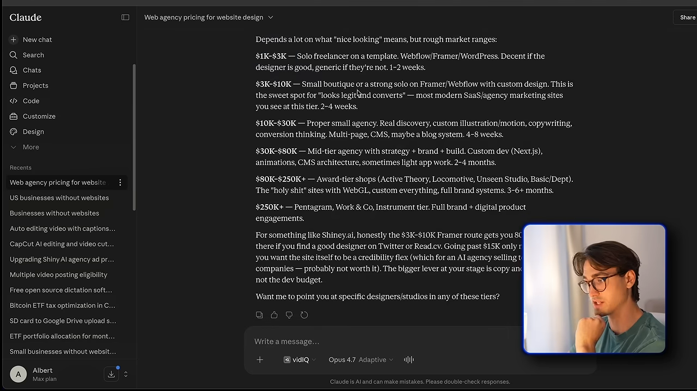
만드는 건 발표자의 웹사이트 스킬이에요. 스킬 설명에는 React와 Tailwind CSS(Cascading Style Sheets)로 애니메이션이 들어간 마케팅 사이트를 만든다고 적혀 있어요. "조경 회사 Cityscape의 웹사이트를 만들어 줘"라고 하면 스킬이 Claude에게 질문부터 하게 해요. 테마는 굵고 모던하게, 브랜드 색은 어두운 초록, 서비스는 조경 설계·잔디·나무·조명·상업 공간으로 답했어요. 8분 41초 뒤 로컬 서버에 아래 사이트가 떴어요.
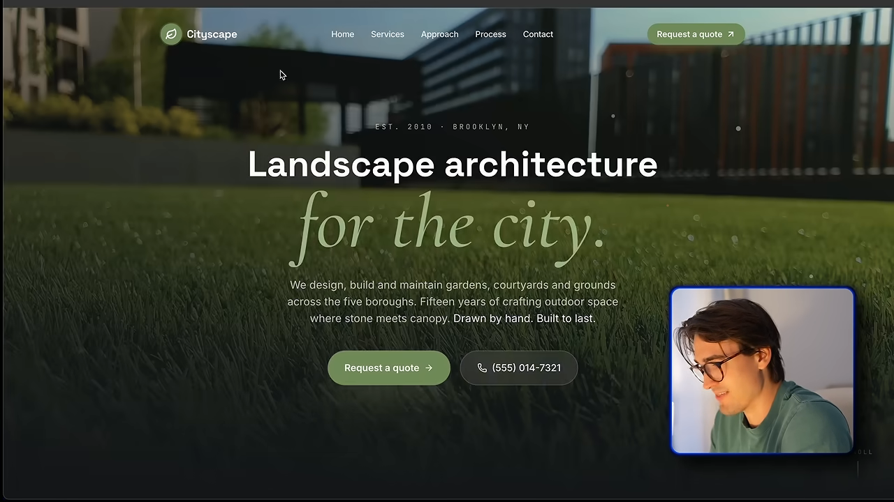
개발자 도구의 모바일 보기로 휴대폰 화면도 확인해요. 배포는 두 단계예요. GitHub에 저장소를 만들어 Claude에게 웹사이트 코드만 푸시하게 하고, Vercel에서 새 프로젝트로 그 저장소를 가져와 Deploy를 눌러요. 이번엔 9초 만에 끝났어요.
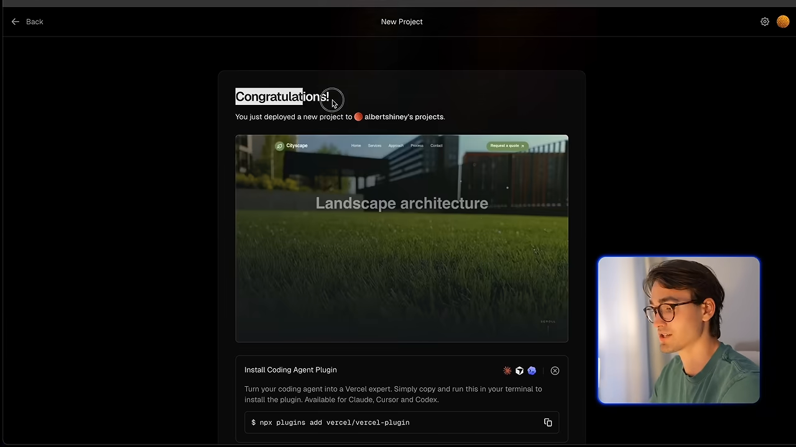
팔 때는 템플릿을 다섯 개쯤 만들어 포트폴리오 사이트에 모아 두라고 해요. Upwork에도 건설 회사 웹사이트 같은 공고가 꾸준히 있대요.
2단계: 자동화는 trigger.dev로
고객이 "청구서 작업을 자동화하고 싶다"고 하면 보통은 Make나 n8n을 써요. 발표자는 trigger.dev를 골라요. 이유는 단순해요. trigger.dev는 코드로 만들고, Claude Code는 코드를 잘 짜요. 아래 첫 화면 가운데 아래에 'Open source'와 GitHub 별 15.0k가 보여요.
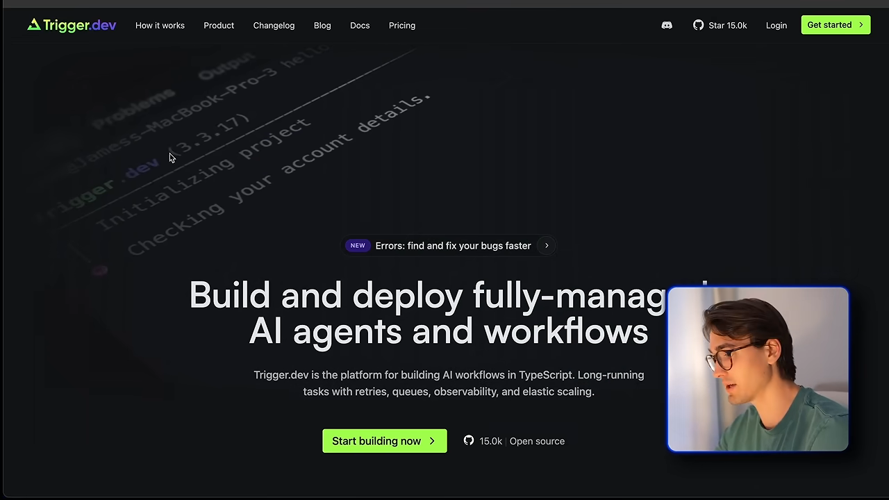
프롬프트는 이랬어요. "양식에 정보를 넣으면 청구서를 만들어 PDF로 내보내고 Gmail로 고객에게 보내고 싶다. 인증은 Composio 스킬로, 빌드와 호스팅은 trigger.dev 스킬로." 여기에 ultrathink를 붙이고 플랜 모드로 돌려요. Claude가 양식 항목, 트리거 방식, 번호 규칙을 물어요. 발표자는 Next.js 웹 양식, 날짜 기반 번호, AI가 쓰는 메일 본문, Drive 저장을 골랐어요. 통화 녹취를 Fathom으로 넘기면 이 설명조차 안 해도 된다고 덧붙여요.
환경 변수에 trigger.dev 비밀 키와 프로젝트 ID(Identifier), Composio API 키, Anthropic API 키, Drive 폴더 ID, 회사 정보를 채워요. Composio가 Gmail·Drive 연결 링크를 주면 브라우저에서 승인만 하면 돼요. 구글 인증 정보를 직접 만들 필요가 없는 게 Composio의 장점이에요. 그다음 아래 양식이 떠요. 고객, 항목, 통화·세율·할인, 발행일과 지급 조건 칸이 있어요.
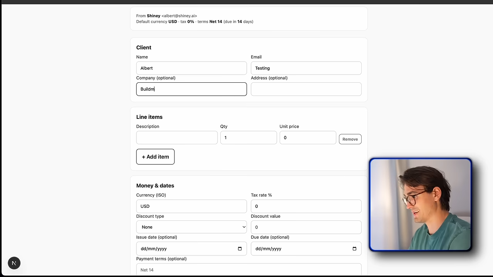
처음엔 오류가 났어요. 발표자는 "내 테스트 됐어? 로그 봐 줘"를 반복해서 Claude가 버그를 고치게 했어요. 몇 번 만에 성공하자 아래 메일이 왔어요. 제목은 'Invoice INV-20260518-1239 from Shiney', 본문은 Claude가 쓴 인사와 2,000달러 청구 안내, 아래에 PDF 첨부가 있어요.
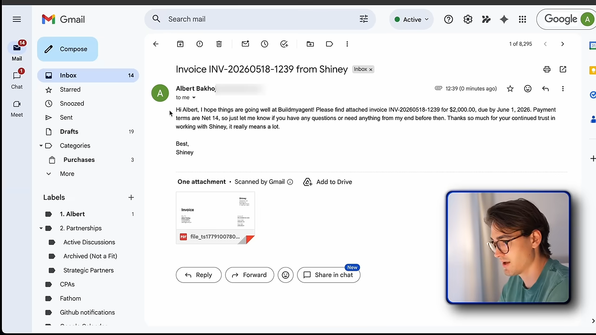
"trigger.dev 프로덕션에 배포해 줘"라고 하면 Claude가 작업을 클라우드로 올려요. 프로덕션용 환경 변수를 trigger.dev 대시보드에 붙여 넣고 비밀 키를 프로덕션 것으로 바꾸면 끝이에요. 다시 보내 보니 13초 만에 실행이 끝나고 아래 PDF가 왔어요.
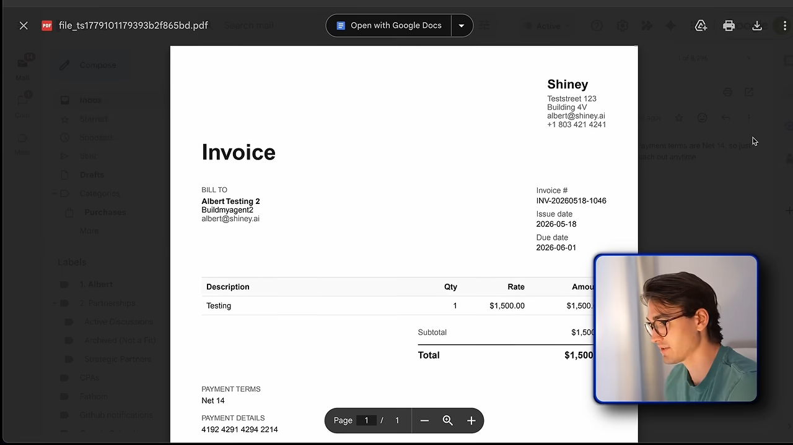
한 가지 경고를 남겨요. 이 양식에는 Anthropic API 키가 물려 있어서, 아무나 들어와 메일을 천 통 보내면 크레딧이 녹아요. 공개 배포 전에 인증을 붙여야 하고, 그건 3단계에서 다뤄요.
만든 과정을 스킬로 남겨요
발표자가 이 강의에서 가장 중요하다고 꼽는 습관이에요. 한 번 공들여 만든 것을 스킬로 만들어 두면 다음엔 시간이 크게 줄어요. 발표자의 'create skill' 스킬을 써서 이렇게 시켜요. 이번 세션에서 배운 걸 담아 "Next.js 양식 + trigger.dev 백엔드 + Composio 인증" 미니 자동화를 만드는 범용 스킬로 만들고, 처음엔 사용자에게 무엇을 만들지 묻고, 만들기 전엔 조사하게 하라고요. 서브에이전트로 지금 앱의 맥락을 모으라고도 덧붙여요.
완성된 뒤 꼭 묻는 질문이 있어요. "이 스킬이 청구서 앱 폴더를 참조하지 않는 독립 스킬이야?" Claude가 다른 파일을 참조하는 습관이 있어서예요. 답은 "완전히 독립적"이었고, 이제 /mini-automation으로 같은 구조를 아무 업무에나 다시 만들 수 있어요.
The value in a Claude Code company like this will be the processes, the skills that Claude has access to.
이런 Claude Code 회사의 가치는 프로세스, 곧 Claude가 쓸 수 있는 스킬에 있어요.
— 영상 2:10:37
3단계: 고객에게 넘길 AI 시스템
전체 AI 시스템은 자동화 여러 개를 하나로 묶은 거예요. 한 회사를 점검해 5개, 10개, 25개 업무를 자동화하는 큰 프로젝트용이에요. 많은 에이전시는 n8n 흐름만 넘기고 끝내지만, 고객은 실행 기록을 들여다보지 않아요. 발표자는 대신 고객이 보는 대시보드를 만들어요. 몇 번 실행됐는지, 시간을 얼마나 아꼈는지 보여 주고, 양식이 필요한 도구도 그 안에 넣어요.
아래 화이트보드가 그 구조예요. 왼쪽 Automations 목록이 오른쪽 두 상자로 들어가요. 초록 상자는 프런트엔드, 곧 대시보드와 도구이고 아래 화살표에 UX(User Experience)라고 적었어요. 파란 상자는 백엔드로, 실행을 맡고 고객 서버에서도 돌 수 있어요. 위에 Azure, AWS(Amazon Web Services), Google Cloud를 적어 어느 클라우드에든 올릴 수 있다는 걸 표시했어요.
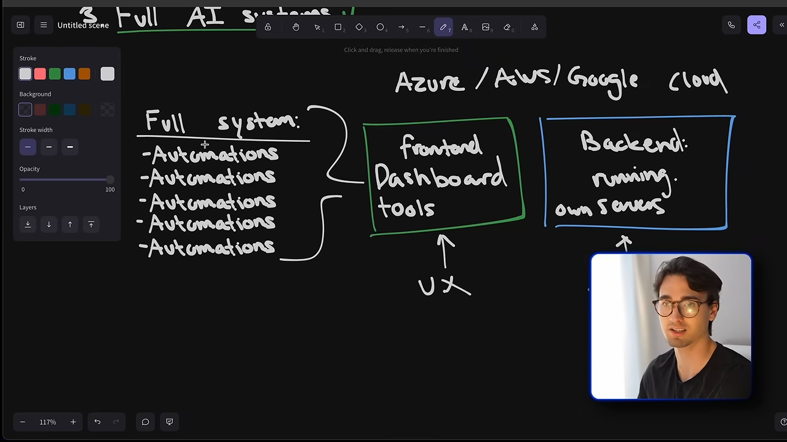
모든 프로젝트에 이게 필요한 건 아니에요. 자동화 하나면 Typeform 같은 양식에 도구 하나를 붙여 넘기면 된다고 해요. 쓰는 기술은 아래 화이트보드에 정리돼 있어요. 프런트엔드는 Next.js, Tailwind, NextAuth, Resend, 백엔드는 trigger.dev로 돌리는 자동화들, 데이터베이스는 MongoDB예요.
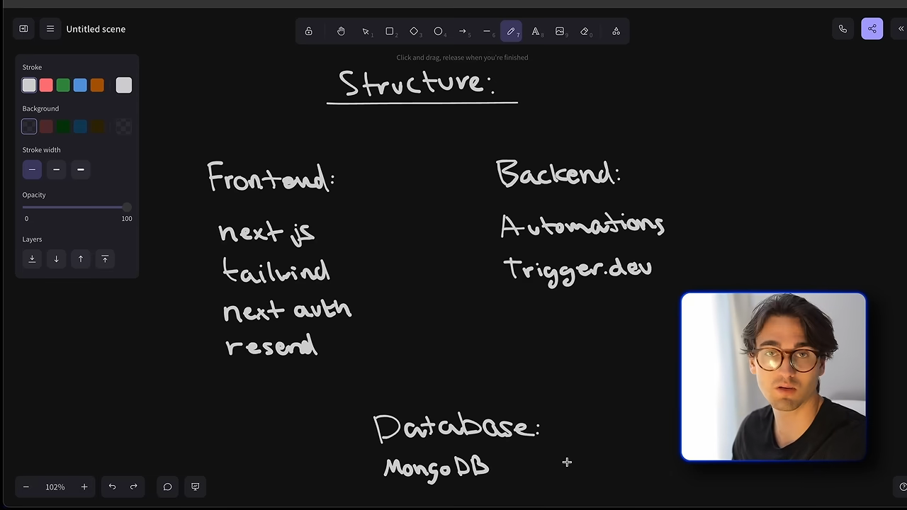
발표자는 매직 링크를 매번 이중 인증을 거는 셈이라 가장 안전하고 쉬운 로그인으로 봐요. MongoDB는 빨리 시작하려고 클라우드로 쓰지만, 커뮤니티 에디션으로 직접 호스팅도 할 수 있어서 trigger.dev처럼 고객 서버로 옮기기 좋대요.
뼈대 먼저, 디자인은 나중에
다른 프로젝트 맥락이 섞이지 않게 새 폴더에서 Claude를 열어요. 프롬프트에는 고객용 앱이고, 회사 도메인(@shiney.ai) 이메일만 들어올 수 있어야 하며, 스택은 위와 같고, 백엔드는 구조만 잡고, 아직 자동화는 만들지 말라고 적어요. 첫 화면은 대시보드, 왼쪽 사이드바에 자동화 목록, 설정에 로그아웃이에요. ultrathink와 플랜 모드를 켜자 Claude가 NextAuth 버전, 컴포넌트(shadcn/ui), 도메인 제한 방식, 세션 방식(JWT(JSON Web Token))을 묻고 13분 만에 뼈대를 세웠어요.
처음 결과는 볼품없었어요. 발표자는 일부러 이렇게 해요. 디자인 걱정 없이 구조를 제대로 세운 다음 프런트엔드 디자인 스킬로 새 옷을 입혀요. "Linear 같은 라이트 모드, 다크 모드도 함께"라고 시키고, 제목 그라데이션이 이상하다, 양옆이 어둡다 같은 건 스크린숏을 붙여 하나씩 고쳤어요. 아래가 그 뒤의 대시보드예요. 'Welcome back, albert' 아래에 전체·활성·초안 자동화 수가 01, 00, 01로 보이고, 왼쪽에 Example automation이 하나 있어요.
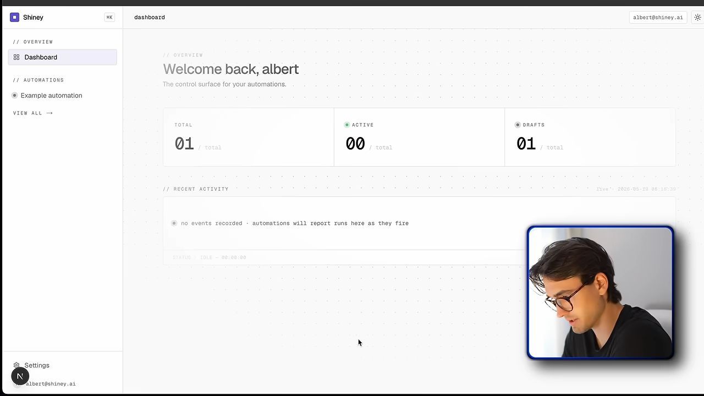
자동화 채워 넣기
먼저 앞에서 만든 청구서 앱을 옮겨요. "이 양식을 AI 시스템 폴더에 설치하고, trigger.dev 백엔드를 만들되 나중에 작업을 더 넣을 수 있게 해 줘. 서브에이전트로 맥락을 모아." 이어서 인증 버튼을 추가해요. 단독 자동화 때는 터미널의 링크로 Composio 인증을 했지만, 고객은 그럴 수 없으니 연결이 안 됐으면 모달이 떠서 버튼으로 인증하게 했어요.
두 번째는 온보딩 자동화예요. 계약서를 Gmail로 보내고, 온보딩 통화를 잡을 Calendly 링크와 설문 링크를 보내는 일이에요. Claude가 이미 시스템 구조를 알고 있어서 3분 만에 만들었어요. 처음엔 계약서 URL을 받게 했다가 PDF 업로드로, 다시 고객 이름과 회사 정보를 넣은 계약서 PDF를 직접 만들어 보내는 쪽으로 바꿨어요. 코드라서 고객 요구대로 무엇이든 바꿀 수 있다는 걸 보여 주는 장면이에요.
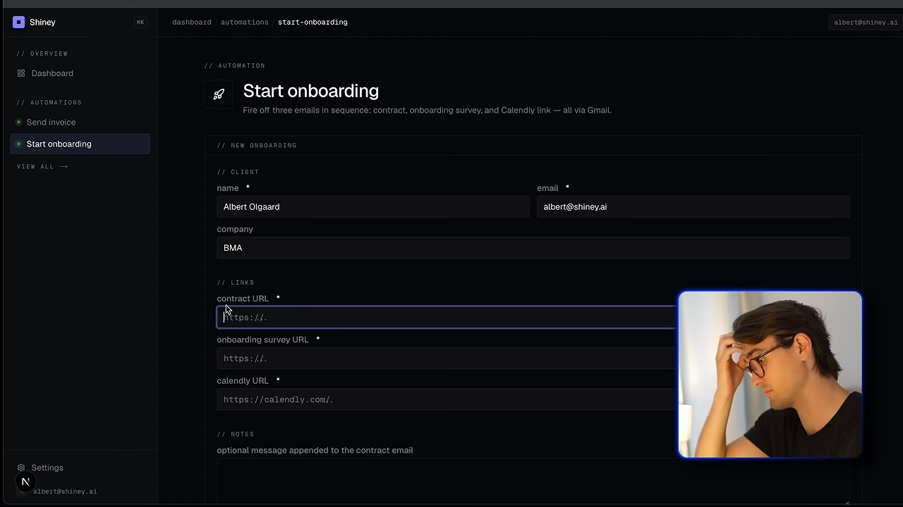
AI 고객지원 메일 시스템
고객사에 하루 종일 메일에 답하는 지원 담당이 다섯 명 있다고 가정하고, 그중 60%를 자동으로 처리하는 시스템을 만들어요. 지식 베이스에서 관련 내용을 찾아 답에 넣는 RAG(Retrieval-Augmented Generation) 방식이에요. 발표자가 프롬프트로 말로 설명한 흐름을 그림으로 옮기면 이래요.
flowchart LR
T["trigger.dev 10분마다 실행"] --> G["Gmail에서 안 읽은 메일 가져오기 (Composio)"]
G --> R["지식 베이스를 RAG로 검색 (MongoDB 벡터 검색)"]
R --> D{"확신이 높고 환불·불만이 아닌가?"}
D -- "예" --> S["AI가 바로 답장"]
D -- "아니요" --> E["사람에게 넘김 · AI가 답장 초안만 작성"]
S --> V["대시보드: AI 답장, 근거, 확신도"]
E --> V
이번엔 superpowers 스킬을 쓰라고 해요. Claude가 질문을 하나씩 던지고(확신 있는 60%는 즉시 발송할까? 지식 베이스는 어떤 형식? 벡터는 어디에 저장?), 설계를 섹션별로 확인받은 뒤 설계 문서를 쓰고, 서브에이전트들이 작업을 나눠 구현했어요. 벡터 저장소로는 Pinecone이나 Postgres 대신 이미 쓰는 MongoDB의 벡터 검색을 골랐어요.
지식 베이스 탭에서는 글을 붙여 넣거나 PDF, URL로 문서를 넣어요. 아래 화면 아래쪽 문서 목록을 보면 shiney.ai URL 항목의 상태가 빨간 'failed'예요. 원인은 임베딩에 필요한 OpenAI API 키가 없어서였고, 키를 넣고 사이트 글을 붙여 넣자 'ready'가 됐어요.
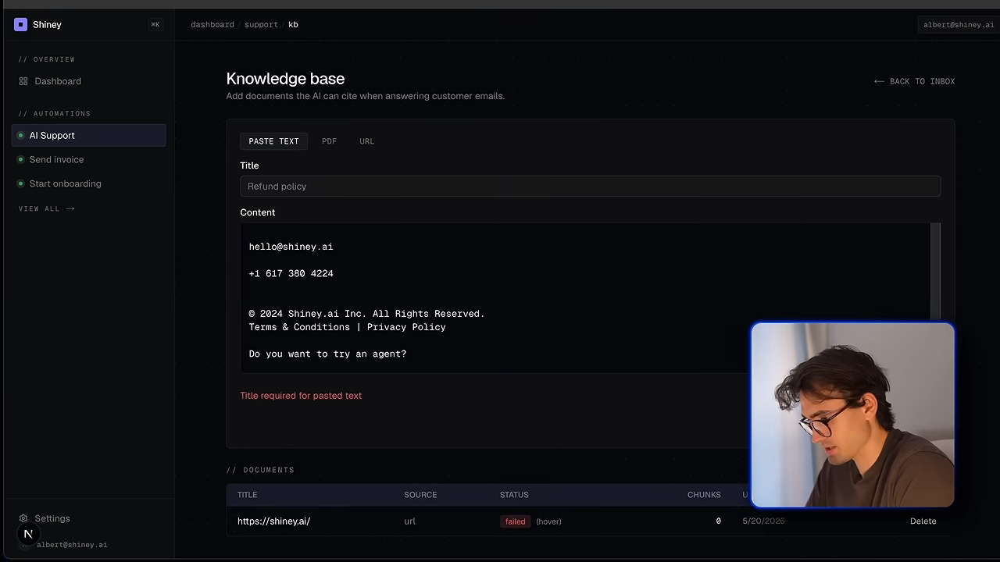
"Shiney AI는 무슨 일을 하나요?"라고 메일을 보내 시험했어요. AI replied 탭에 들어간 티켓을 열면 아래처럼 보여요. 위쪽은 AI가 지식 베이스를 바탕으로 쓴 답장이고, 'Why this reply' 아래 Confidence 막대가 90%, 그 아래 CITATIONS에 답의 근거가 된 Basic Info 조각 세 개가 있어요.
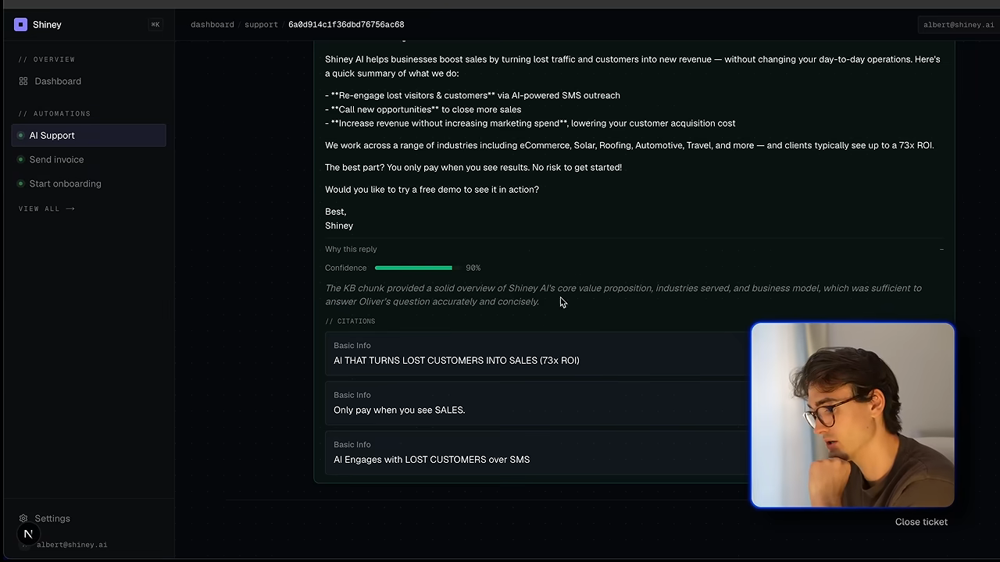
얼마를 받을 수 있을까요. 미국 지원 담당 월급을 3천~4천 달러로 보고, 열 명을 다섯 명으로 줄이면 월 1만 5천 달러를 아껴요. 월 5천 달러를 받아도 고객은 1만 달러가 남아요. 그래서 큰 회사라면 월 2천~5천 달러가 가능하다고 봐요. 지식 베이스만 바꾸면 다른 고객에게 다시 팔 수 있다는 것도 장점이에요.
배포와 스킬화
프런트엔드만 따로 비공개 저장소에 푸시하고 Vercel에 올려요. 발표자는 "비밀 값은 절대 푸시하지 마"라고 꼭 덧붙인대요. 첫 배포는 MongoDB 패키지 버전 충돌로 실패해서, 로컬에서 npm run build로 확인한 뒤 Claude가 버전을 맞췄어요. 환경 변수를 넣고, 특히 NextAuth의 사이트 주소 변수를 로컬 주소에서 실제 주소로 바꾸는 걸 잊으면 매직 링크가 로컬로 가요. 발표자도 한 번 빠뜨렸어요.
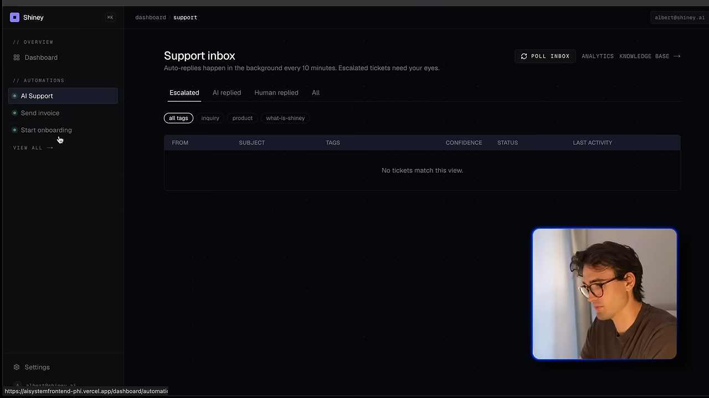
앞서 뼈대가 완성됐을 때 이 구조도 'new client system' 스킬로 만들어 뒀어요. 고객 이름과 이메일 도메인부터 묻고, 자동화 없이 프런트엔드와 백엔드 뼈대를 통째로 세우는 독립 스킬이에요. 새 고객이 올 때마다 처음부터 시작하지 않으려는 거예요.
처음 만드는 것도 만드는 4단계
고객이 유튜브에 튜토리얼도 없는 걸 만들어 달라고 하면 어떻게 할까요. 발표자는 무엇이든 네 단계로 쪼개요. 화이트보드 여러 장에 걸쳐 설명한 내용을 한 장으로 모으면 이래요.
① 빌드 계획: 스택과 디자인
가장 중요한 단계래요. 기술 스택이 운영 비용, 속도, 확장성, 나중에 기능을 붙일 수 있는지를 정하기 때문이에요. 화이트보드에서 tech stack으로 들어오는 화살표 네 개가 scale, cost, fast, functionality예요. 그 아래 Design도 빌드 계획으로 들어가요.
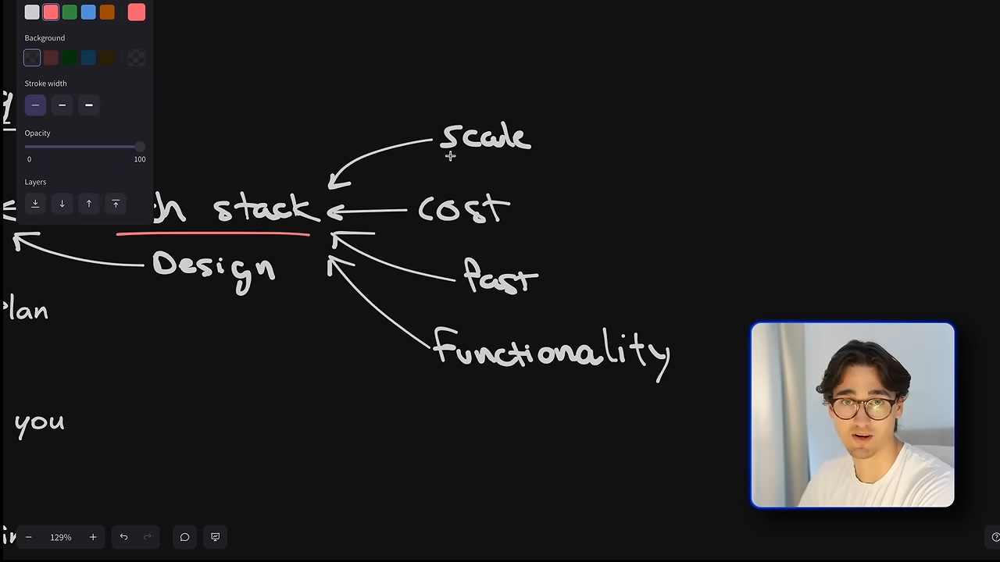
복잡한 걸 만든다면 이 단계에 몇 시간을 쓰라고 해요. 나쁜 걸 나중에 고치는 것보다 처음부터 좋게 만드는 게 훨씬 쉽대요.
② 구현 계획: 체크박스가 달린 단계 목록
빌드 계획을 "어떤 순서로 만들까"로 바꾼 게 구현 계획이에요. 화이트보드처럼 1번 파일 구조 아래에 세부 단계 체크박스가 세 개씩 달리고, 2번, 3번… 복잡하면 40번까지 갈 수 있어요. Claude도 알아서 이런 계획을 세우지만, 내가 확인하고 다듬으면 결과가 훨씬 좋아진대요.
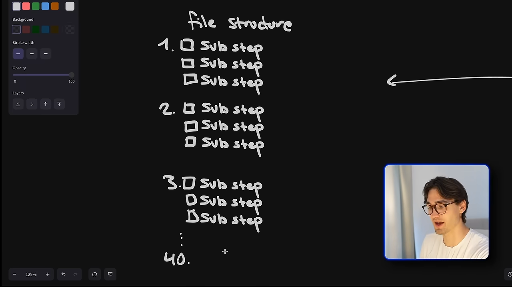
③ LLM이 만들고, ④ 테스트하고 다듬어요
구현 계획을 주고 "1단계부터 시작해"라고 해요. LLM은 세부 단계를 끝내고 "1단계 끝, 2단계 할까요?"라고 돌아와요. 계획 없이 통째로 맡기는 것보다 순서가 지켜져요. 다 만들어도 버그는 거의 반드시 나오니, 오류를 붙여 넣고 고치게 하는 걸 반복해요.
발표자의 덧붙임이 둘 있어요. 이 과정 내내 Claude를 컨설턴트처럼 써서 "무엇이 최선인가"를 물으라는 것, 그리고 두 모델을 쓰라는 거예요. 한 모델이 정한 결정을 다른 모델(다른 Claude 세션이나 Codex)에게 "이게 맞아?"라고 물으면 서로 검토하며 더 나은 답이 나온대요.
시연: 리드 보강 도구
발표자가 만들어 본 적 없는 걸 골라요. 이메일, 회사 도메인, 이름과 회사, LinkedIn 주소 중 무엇이든 넣으면 그 사람의 연락처와 회사 정보를 찾아 주는 도구예요. 스택은 일부러 알려 주지 않고 Claude가 정하게 했어요. "빌드 계획을 먼저 만들자, 어떻게 동작할지 질문해 줘"라고만 했어요.
여기서 superpowers 플러그인이 일을 해요. 질문으로 요구를 다듬고(입력은 무엇이든, 출력은 기본 정보·연락처·회사·소셜, 웹 앱 하나, 저장 없이 조회만), 설계 문서(발표자가 말하는 빌드 계획)를 쓰고, 계획 작성 스킬로 구현 계획을 만들고, 서브에이전트가 작업별로 구현해요. 데이터 공급자는 Hunter 하나로 정했어요. 모르는 질문엔 "뭘 추천해?"라고 되물으면 된다고 해요.
13분 만에 앱이 나왔어요. Hunter API 키를 환경 변수에 넣고 실행했더니 한 번 오류가 났고, 오류를 붙여 넣자 고쳐졌어요. 이름과 회사 도메인만 넣었는데 발표자의 이메일을 찾아냈고, 도메인만 넣자 공동 창업자의 이메일도 나왔어요. 아래가 처음 화면이에요. 'What do you have?'에서 이름+회사를 고르고 Full name과 Company domain을 넣는 단순한 양식이에요.
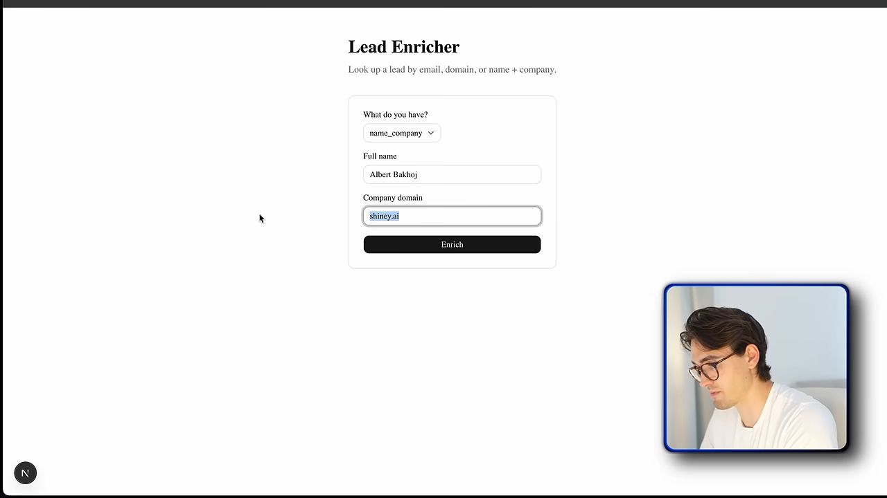
④ 다듬기 단계로 프런트엔드 디자인 스킬에 "모던한 SaaS처럼 깔끔하게"라고 시켰어요. 기능은 같고, 'Find anyone's work email.' 제목 아래 Email, Domain, Name + Company 세 탭으로 바뀌었어요.
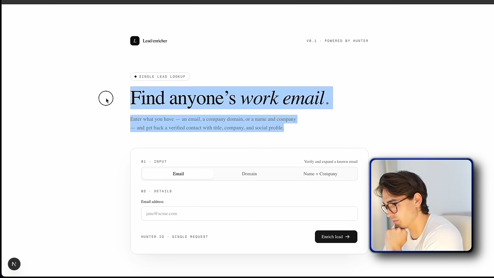
이미 기술을 아는 사람은 스택을 직접 정해 ①을 줄일 수 있어요. 초보라면 이 대화를 건너뛰지 말라는 게 발표자의 당부예요.
가격 정하기와 앞으로의 로드맵
가격의 황금 규칙은 하나예요. 고객에게 투자한 돈의 5배를 돌려줘요. 고객이 5천 달러를 아끼게 해 줬다면 1천 달러를 받는 식이에요. 5배를 지키면 고객이 만족해서 이탈이 줄고 소개가 늘어요. 소개로 들어오는 고객이 떠나는 고객보다 많아지면, 마케팅 없이도 회사가 커지는 '음의 이탈'까지 갈 수 있다고 해요.
5배 ROI는 이렇게 계산해요
발표자가 든 예가 둘이에요. 첫째는 비용 절감이에요. 지원 담당 10명이 전화를 받던 회사에 음성 에이전트를 넣어 5명으로 줄였어요. 1인당 월 2천 달러면 월 1만 달러를 아끼니, 그 5분의 1인 월 2천 달러를 받아요. 고객에게는 매달 8천 달러가 남아요. 둘째는 매출 증대예요. 콜드 이메일 시스템이 매달 새 매출 10만 달러를 만든다면 매출이 아니라 이익으로 계산해요. 이익이 4만 달러라면 그 5분의 1인 8천 달러를 받아요.
월 절감액 0달러
내 수수료 (5분의 1) 0달러
고객에게 남는 돈 0달러
- 기본값(5명, 2천 달러)에서 수수료가 영상의 월 2천 달러, 고객 몫이 8천 달러로 나오는지 보세요.
- 월급을 3천 달러로 올려 보세요. 3단계의 AI 고객지원 예시처럼 절감액이 1만 5천 달러가 돼요. 5배 규칙이면 수수료는 3천 달러예요. 발표자는 그 예에서 월 5천 달러까지 말했는데, 그러면 고객이 얻는 건 수수료의 3배쯤이에요. 두 대목의 숫자가 딱 맞지는 않아요.
- 인원을 1명으로 줄여 보세요. 절감액이 작으면 받을 수 있는 금액도 작아져요. 작은 고객보다 큰 고객이 나은 이유예요.
가격 구조 세 가지
첫째, 성과 기반이에요. 아래 화이트보드처럼 이익의 20%를 받는 방식으로, 고객에게는 위험이 없고 나는 자신감 있어 보여요. 대신 성과를 추적할 수 있어야 해서 CRM이 잘 갖춰진 큰 고객과 맞아요. 발표자 회사는 이탈 고객 재활성화를 늘 성과 기반으로 하는데, 월 1천 달러 리테이너로 받았을 고객에게서 누적 24만 달러를 받았대요. 실력이 좋다면 성과 기반이 리테이너보다 낫다는 거예요.
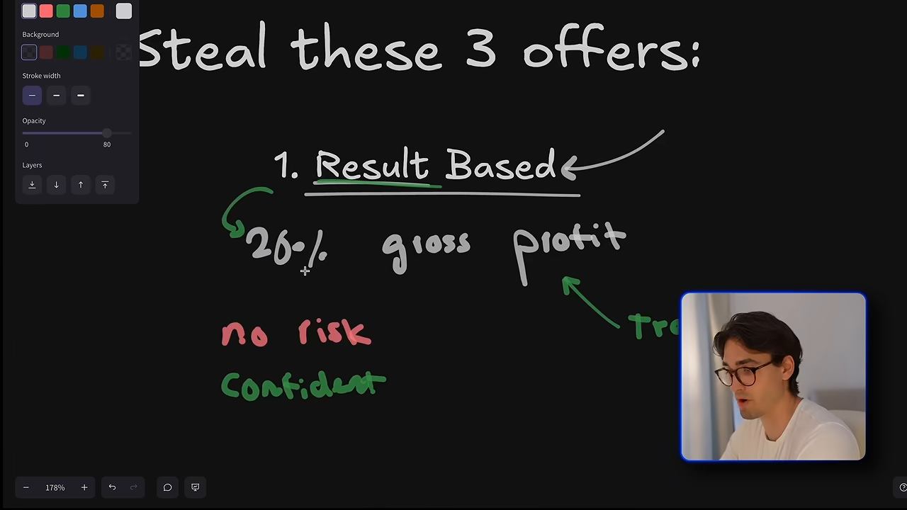
둘째, 선금과 월 정액이에요. 추적이 어렵거나 고객이 50곳쯤 되면 매달 성과를 따지기가 골치 아파서예요. 화이트보드 가운데 '$2000 upfront'와 '$500/m'이 그 예예요. 선금으로 고객이 투자하게 만들되, 만족 보장으로 위험을 없애요. 오른쪽 화살표에 invested(투자), Meeting(다 만든 뒤 회의), no risk가 붙어 있어요. 왼쪽 'stop'은 선금 없이 시작했다가 고객이 연락을 끊은 경험을 가리켜요.
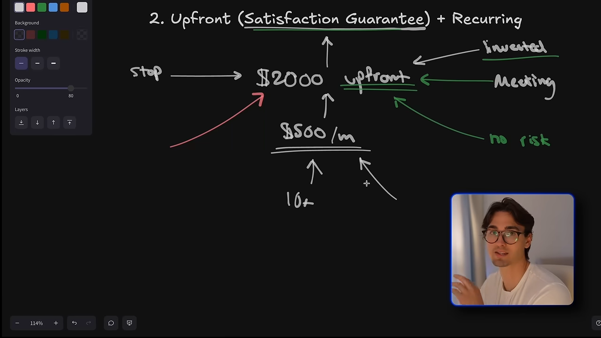
셋째, 늘 이익이 남게 하는 장치예요. 사용량이 큰 서비스는 등급을 나눠요. 음성 에이전트라면 아래처럼 통화 100건, 1,000건, 5,000건, 5,000건 초과로 나눠요. 월 500달러에 팔았는데 고객이 월 1만 건을 쓰면 망할 수 있어서예요.
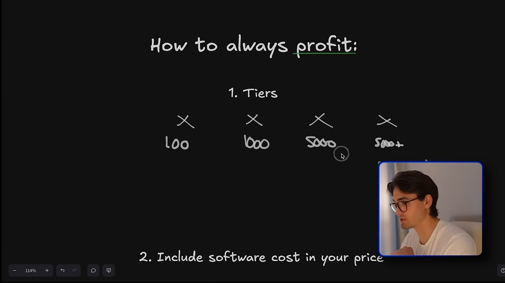
서비스 500달러에 소프트웨어 100달러를 따로 적지 말고 600달러 하나로 제시해요. 예외는 고객이 시스템을 소유하거나 자기 서버에서 돌리려는 큰 고객이에요. 그땐 호스팅과 소프트웨어 비용을 고객이 내고, 설치비는 훨씬 높아져요.
끝으로 두 가지를 다시 못 박아요. 가치를 보여 주기 전에는 가격을 말하지 않는다, 그리고 AI를 파는 게 아니라 결과를 판다예요. 고객은 최신 모델을 쓰는지보다 월 1만 달러를 아끼는지에 관심이 있대요.
지금부터의 로드맵
마지막 화이트보드는 다섯 단계예요. 1 기술 배우기(이 강의로 이미 체크), 2 고객 따기(무료나 시급 15달러, 오른쪽 상자의 마케팅·영업에 하루 4시간), 3 생활 유지하기, 4 더 비싸게 받기, 5 병목 찾기예요.
3단계 '생활 유지'는 월 2천~3천 달러로 집세를 낼 수 있는 상태예요. 사업 열 개 중 아홉이 망하는데, 대부분 이 지점에 닿기 전에 그만둔대요. 여기까지 가면 다시는 포기하지 않는다는 거예요. 4단계에선 꾸준히 고객이 들어오니, 돈을 더 낼 수 있는 고객을 고르고 까다롭고 돈 없는 고객은 거절해요.
5단계는 끝이 없어요. 사업 확장은 병목을 찾아 풀고 다음 병목으로 가는 일의 반복이라는 거예요. 아래 깔때기 그림에서 위로 리드가 쏟아져 들어오는데 가운데가 좁아요. 화살표 둘이 각각 salespeople(영업 인력)과 tech(기술 인력)를 가리켜요. 통화를 혼자 다 받느라 달력이 꽉 찼다면 영업 사람을 뽑고, 그다음엔 납품이 막히니 기술 사람을 뽑거나 Claude로 더 자동화해요.
마지막 당부는 기대치와 직장이에요. 성장은 처음엔 월 몇백 달러를 맴돌다가 어느 순간 꺾여 올라가고, 그 뒤로도 주식 차트처럼 오르내린대요. 1년을 바쳐도 괜찮다고 스스로 정하라고 해요. 직장은 그만두지 말고, 9시부터 5시까지 일하고 남는 아침·저녁·주말 시간에 사업을 시작해 감당할 수 있을 때 옮기라고 해요.